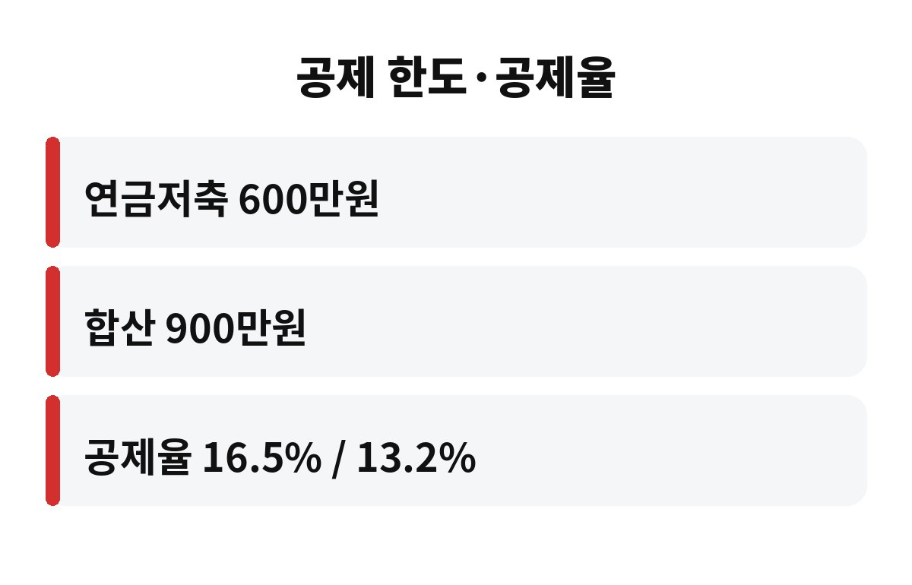

연금저축 세액공제는 연금저축과 IRP를 합쳐 연 900만원까지 넣으면 최대 148만원(총급여 5,500만원 이하 기준, 공제율 16.5%)을 돌려받는 제도예요. 아직 한 푼도 안 넣은 직장인이라면, 올해 안에 얼마를 넣어야 손해를 안 볼까요?
연말정산은 해가 바뀌면 끝이 아니라, 12월 31일까지 낸 돈이 기준이에요. 그러니까 지금 10월 말, 딱 두 달 남짓이 마지막 기회인 셈이죠. 오늘은 연금저축 세액공제를 숫자로 쉽게 풀어드릴게요.
납입 한도부터 볼게요. 연금저축만 넣으면 연 600만원까지, IRP를 함께 쓰면 두 계좌 합쳐서 연 900만원까지 세액공제 대상이에요.
공제율은 소득에 따라 달라져요. 총급여 5,500만원 이하(종합소득 4,500만원 이하)면 16.5%, 그보다 높으면 13.2%예요. 이 숫자만 알면 내 환급액이 바로 계산돼요.
| 납입액 | 공제율 16.5% | 공제율 13.2% |
|---|---|---|
| 600만원 | 99만원 | 79만 2천원 |
| 900만원 | 148만 5천원 | 118만 8천원 |
월급쟁이 입장에서 148만원이면 꽤 큰돈이죠. 치킨으로 치면 몇 마리인지 세기도 귀찮을 정도예요. 게다가 세금을 깎아주는 거라, 연말정산 때 환급액이나 추가 납부액에 바로 반영돼요.

가장 흔한 실수는 "나중에 한꺼번에 넣어야지" 하다가 연말을 놓치는 거예요. 한도를 못 채운 만큼은 이월되지 않아서, 올해 못 받은 공제는 그냥 사라져요.
예를 들어 올해 한 푼도 안 넣었는데 900만원을 채우고 싶다면, 11월과 12월 두 달 동안 매달 450만원씩 넣어야 해요. 부담스럽다면 600만원만 목표로 해도 돼요. 이 경우 두 달에 300만원씩이니 한결 낫죠.
이미 일부 넣었다면 남은 한도만 계산하면 돼요. 금융사 앱에서 올해 납입액을 확인한 뒤 900만원에서 뺀 금액이 내가 더 넣을 수 있는 최대치예요. 참고로 연금저축 납입은 은행·증권사 영업 마감 시간이나 이체 반영일을 따지니, 12월 마지막 주에 몰아서 넣기보다 조금 일찍 하는 편이 안전해요.
여기가 제일 중요해요. 세액공제는 공짜가 아니라 세금을 나중으로 미루는 구조에 가까워요. 나중에 연금으로 받을 때는 연금소득세가 붙는데, 보통 연령에 따라 3.3~5.5% 수준이에요.
문제는 중간에 해지할 때예요. 55세 이전에 연금 외 방식으로 빼면 기타소득세 16.5%가 붙고, 그동안 받은 공제 혜택도 사실상 되돌려줘야 해요. 그러니 당장 1~2년 안에 쓸 돈은 넣지 않는 게 좋아요.
또 하나, 연금저축과 IRP는 상품마다 수수료와 운용 방식이 달라요. 세액공제 금액만 보고 고르기보다, 내가 오래 가져갈 수 있는 계좌인지 먼저 살펴보세요.
한 가지 더 알아두면 좋은 건, 세액공제는 내가 낸 세금이 있어야 받을 수 있다는 점이에요. 결정세액이 적은 분은 900만원을 다 넣어도 공제액이 그만큼 나오지 않을 수 있어요. 그래서 작년 연말정산 결과표에서 결정세액을 먼저 보고, 내 한도를 가늠해 보시길 권해요. 배우자가 소득이 없다면 부부 중 소득이 있는 쪽 계좌에 넣는 게 유리하다는 점도 기억해 두세요. 급하게 넣고 나서 후회하는 일이 없도록, 이번 주말에 10분만 투자해서 숫자를 꼭 한번 계산해 보세요.
복잡하게 생각할 필요 없어요. 아래 세 가지만 체크하면 돼요.
이 세 가지를 해두면, 연말정산 때 "그때 넣을걸" 하고 후회할 일이 확 줄어요. 최대 148만원이라는 숫자는 한도를 꽉 채우고 공제율 16.5% 구간일 때의 이야기라서, 내 조건에 맞춰 계산해 보는 게 먼저예요.
여러분은 올해 연금저축, 얼마나 채우셨나요? 댓글로 알려주시고, 이런 연말정산 정보가 도움이 되셨다면 구독해 주세요!
※ 이 글은 일반적인 정보 제공을 위한 것이며 투자 권유가 아닙니다. 세금 공제 조건은 개인별로 다를 수 있어요.